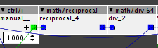
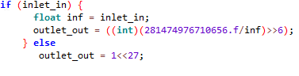
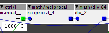
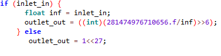

I try to merge these objects into one,

i merged reciprocal and div 64:

Replacing inlet_in with param_value doesnt work.
Is it because i have to convert an int to an float?

I try to merge these objects into one,

i merged reciprocal and div 64:

Replacing inlet_in with param_value doesnt work.
Is it because i have to convert an int to an float?
try to do 28.....56.f/(inf<<27) instead of 28.....56.f/inf. Test the object and if it does not work try with different values for the bitshift (try smaller).
If you want a complete explanation of the reason for this you should read this topic (i had almost the same problem) https://sebiik.github.io/community.axoloti.com.backup/t/help-with-division-and-multiplication-of-float-values-solved/1562
Especially the answers from thetechnobear, which is quite complete
yes..... what i thought
invalid operands of types 'float' and 'int' to binary 'operator<<'
Iit has to do with conversion.
float to binary.....
C:\Users\Philoop\DOCUME~1\axoloti/build/xpatch.cpp:793:50: error: invalid operands of types 'float' and 'int' to binary 'operator<<'
outlet_out = (int)(281474976710656.f/(inf<>6);
thx 4 ur help sputniki